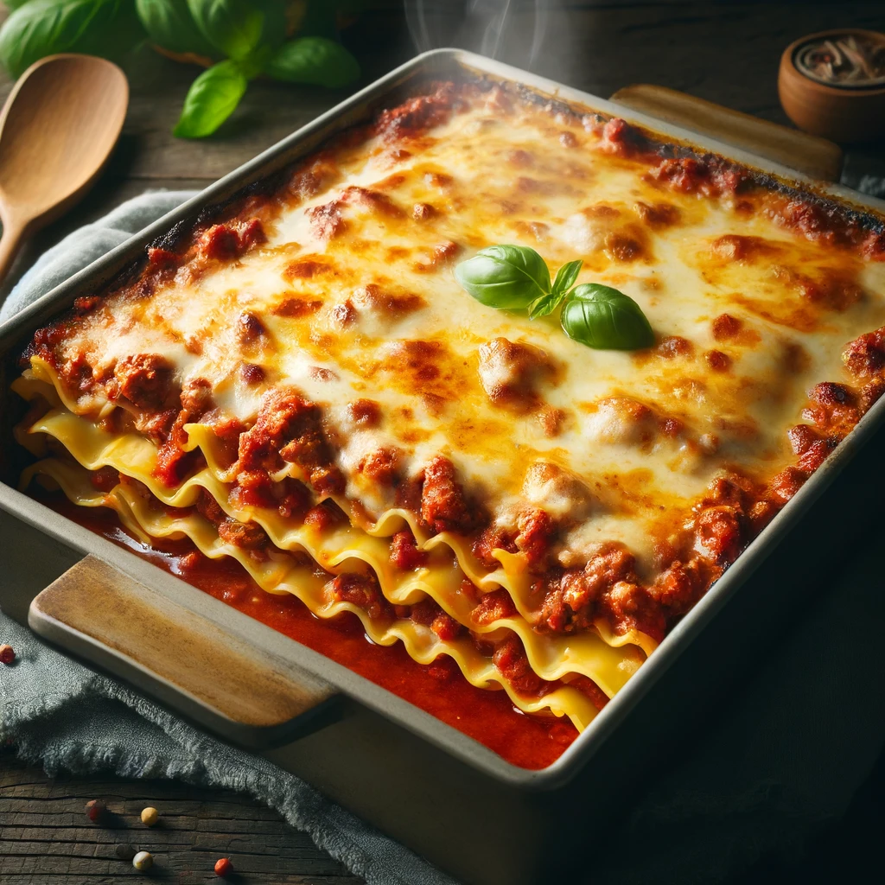

Lasagna

The lasagna is featuring layers of pasta, rich tomato sauce, minced meat, and a top layer of melted mozzarella cheese that is golden and slightly crispy.
Ingredients
- Lasagna noodles
- Ground beef or pork
- Onion, chopped
- Garlic cloves, minced
- Canned crushed tomatoes
- Tomato paste
- Italian seasoning
- Salt and pepper
- Ricotta cheese
- Mozzarella cheese, shredded
- Parmesan cheese, grated
- Fresh basil leaves
Steps
- Preheat your oven to 375°F (190°C).
- In a large skillet, cook the ground meat over medium heat until browned. Add the onions and garlic, and cook until softened. Stir in the crushed tomatoes, tomato paste, Italian seasoning, salt, and pepper. Simmer for about 15 minutes.
- In a bowl, mix the ricotta cheese with some grated Parmesan and chopped basil. Season with salt and pepper to taste.
- Spoon a layer of the meat sauce into the bottom of a baking dish. Place a layer of lasagna noodles over the sauce. Spread a layer of the ricotta mixture on the noodles, and sprinkle mozzarella cheese over the top. Repeat the layers, ending with a generous layer of mozzarella and Parmesan cheeses.
- Cover with foil and bake in the preheated oven for 25 minutes. Remove the foil and bake for another 25 minutes, or until the cheese is bubbly and golden. Let it cool for 15 minutes before serving.